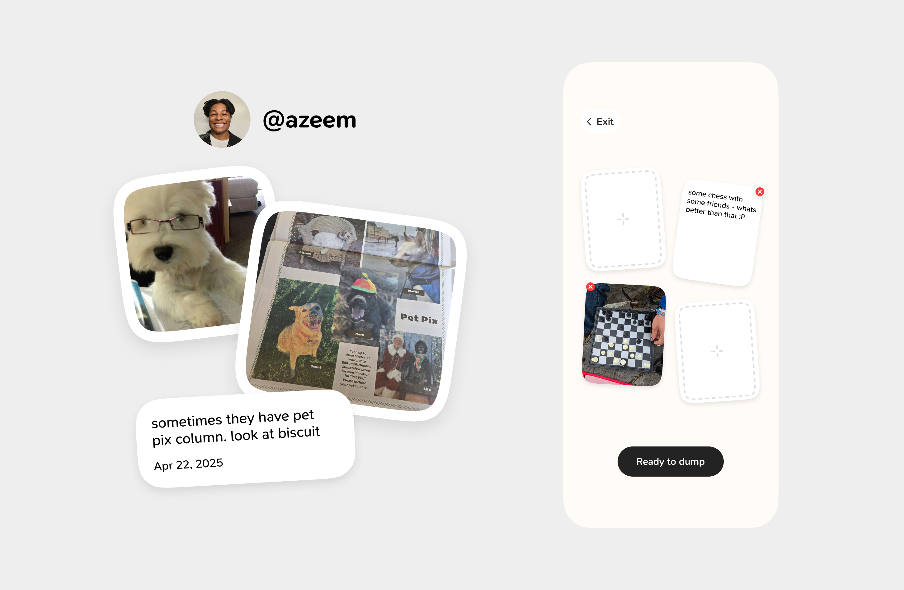

I’m a product design engineer passionate about people and products. Having started from anywhere but linear, I am fascinated by how other people think, feel and behave.
Currently at Paradox designing career sites solutions making applying to jobs seamless.
Also building Verse, a camera app that uses AI to generate poetry based on what it sees.
Currently designing and optimizing career site components for Paradox, focusing on increasing user applicant focus rate and providing a seamless user experience.
2024 - Present
Designed, explored, and assisted engineers in building a new social media.
2023 - 2024
Designed the user interface for Hause, providing independent artists a seamless platform to showcase and sell their artwork. Implemented user-friendly features to streamline the selling process and enhance the overall user experience.
2022 - 2023